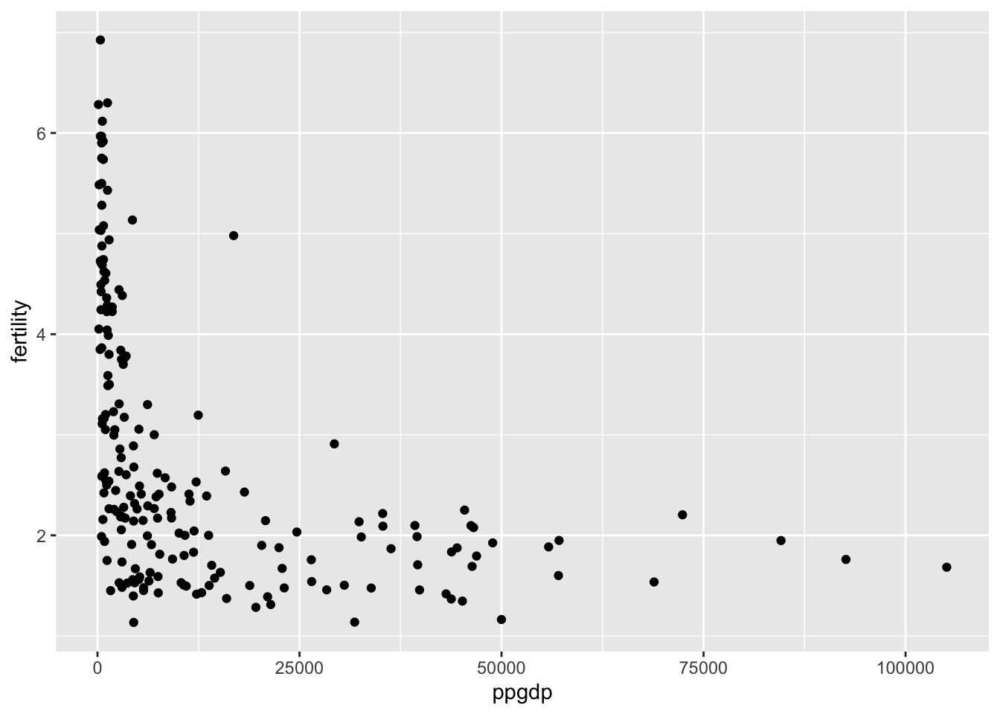
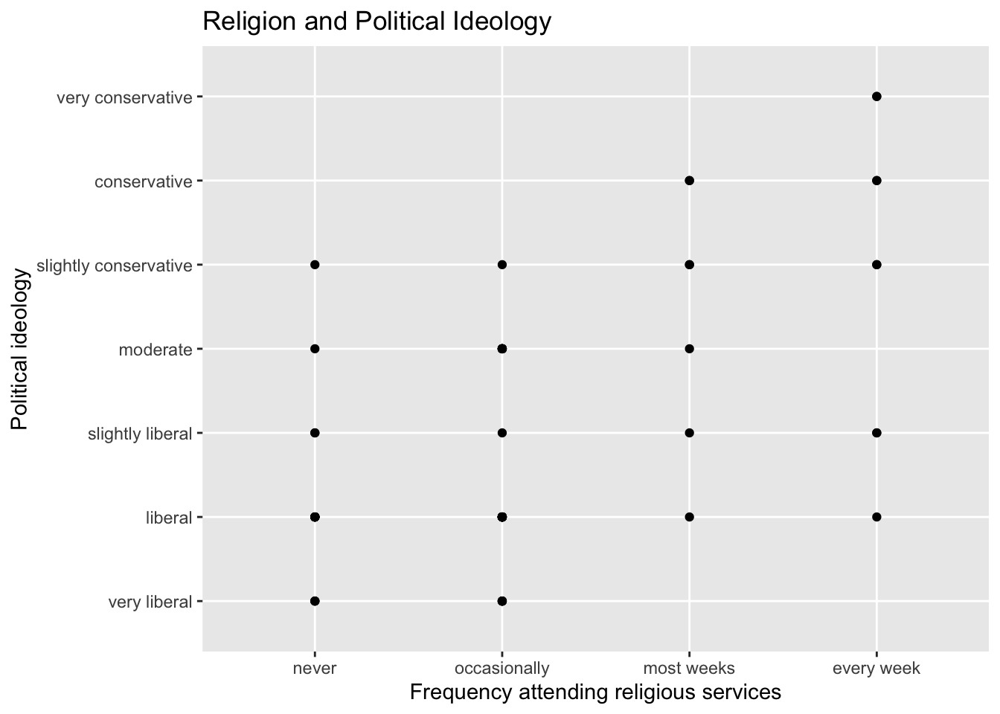
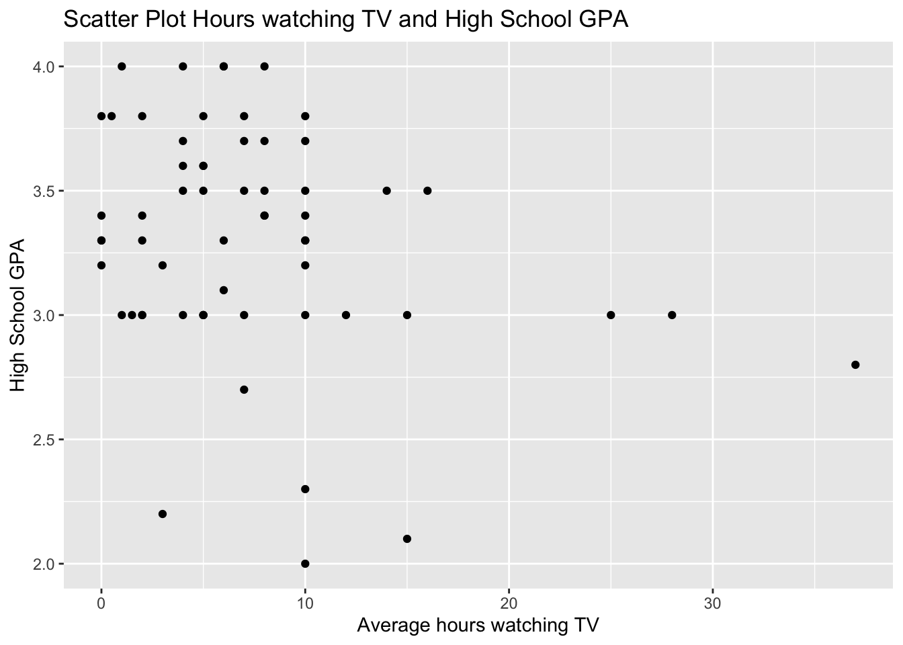

A: Predictor: gross national product per person (ppgdp) Response: fertility
Code
# Assuming your data frame is named 'df'ggplot(data = UN11, aes(x = ppgdp, y = fertility)) +geom_point()

Code
# Assuming your data frame is named 'df'ggplot(data = UN11, aes(x =log(ppgdp), y =log(fertility))) +geom_point()
2 a: The conversion factor from dollars to British pounds sterling is given as 1 pound equals about 1.33 dollars.the slope will also become divided by 1.33. 2 b: When converting the units of the explanatory variable from dollars to British pounds sterling in a regression analysis, the correlation between variables does not change. The correlation measures the strength and direction of the linear relationship between two variables and is not affected by the choice of units or scale used to measure the variables.
Quality vs. Other Ratings: Look for relationships between the quality rating and the other ratings (helpfulness, clarity, easiness, and raterInterest). A positive relationship would indicate that higher ratings in one variable tend to be associated with higher ratings in the other variable. Helpfulness vs. Clarity: Examine the relationship between the helpfulness and clarity ratings. If there is a positive relationship, it suggests that instructors who are rated as more helpful also tend to be rated as more clear in their teaching. Easiness vs. Other Ratings: Consider the relationship between the easiness rating and the other ratings. A positive relationship would indicate that courses perceived as easier tend to receive higher ratings in terms of quality, helpfulness, clarity, and rater interest. RaterInterest vs. Other Ratings: Look for any relationships between the raterInterest rating and the other ratings. A positive relationship would indicate that instructors who teach subjects that students are more interested in tend to receive higher ratings in terms of quality, helpfulness, clarity, and easiness.
5(a):
Code
data(student.survey)ggplot(data = student.survey , aes(x=re, y=pi)) +geom_point() +labs(title="Religion and Political Ideology",x ="Frequency attending religious services", y ="Political ideology")

Code
ggplot(data = student.survey, aes(x=tv, y=hi)) +geom_point() +labs(title="Scatter Plot Hours watching TV and High School GPA",x ="Average hours watching TV", y ="High School GPA")

5(b):
Code
model1 <-lm(as.numeric(pi) ~as.numeric(re), data = student.survey)summary(model1)
Call:
lm(formula = as.numeric(pi) ~ as.numeric(re), data = student.survey)
Residuals:
Min 1Q Median 3Q Max
-2.81243 -0.87160 0.09882 1.12840 3.09882
Coefficients:
Estimate Std. Error t value Pr(>|t|)
(Intercept) 0.9308 0.4252 2.189 0.0327 *
as.numeric(re) 0.9704 0.1792 5.416 1.22e-06 ***
---
Signif. codes: 0 '***' 0.001 '**' 0.01 '*' 0.05 '.' 0.1 ' ' 1
Residual standard error: 1.345 on 58 degrees of freedom
Multiple R-squared: 0.3359, Adjusted R-squared: 0.3244
F-statistic: 29.34 on 1 and 58 DF, p-value: 1.221e-06
Code
model2 <-lm(hi ~ tv, data = student.survey)summary(model2)
Call:
lm(formula = hi ~ tv, data = student.survey)
Residuals:
Min 1Q Median 3Q Max
-1.2583 -0.2456 0.0417 0.3368 0.7051
Coefficients:
Estimate Std. Error t value Pr(>|t|)
(Intercept) 3.441353 0.085345 40.323 <2e-16 ***
tv -0.018305 0.008658 -2.114 0.0388 *
---
Signif. codes: 0 '***' 0.001 '**' 0.01 '*' 0.05 '.' 0.1 ' ' 1
Residual standard error: 0.4467 on 58 degrees of freedom
Multiple R-squared: 0.07156, Adjusted R-squared: 0.05555
F-statistic: 4.471 on 1 and 58 DF, p-value: 0.03879
The analysis suggests a negative relationship between the average TV hours per week and the GPA score. For every additional hour of TV watched per week, the GPA score is expected to decrease by approximately 3 points. However, the relationship is weak or low, and eliminating outliers may not significantly change the results. Furthermore, the low R-squared value indicates that TV hours explain only a small portion of the GPA score.
Source Code
---title: "Homework 3"author: "Sai Padma pothula"desription: ""date: "05/02/2023"format: html: toc: true code-fold: true code-copy: true code-tools: truecategories: - Homework 3 - sai Pothula---```{r}library(alr4)library(smss)library(ggplot2)library(stargazer)``````{r}data(UN11)``````{r}str(UN11)```A: Predictor: gross national product per person (ppgdp) Response: fertility```{r}# Assuming your data frame is named 'df'ggplot(data = UN11, aes(x = ppgdp, y = fertility)) +geom_point()``````{r}# Assuming your data frame is named 'df'ggplot(data = UN11, aes(x =log(ppgdp), y =log(fertility))) +geom_point()```2 a: The conversion factor from dollars to British pounds sterling is given as 1 pound equals about 1.33 dollars.the slope will also become divided by 1.33.2 b: When converting the units of the explanatory variable from dollars to British pounds sterling in a regression analysis, the correlation between variables does not change. The correlation measures the strength and direction of the linear relationship between two variables and is not affected by the choice of units or scale used to measure the variables.3:```{r}data(water)pairs(water)```4:```{r}data(Rateprof)ratings <- Rateprof[, c("quality", "helpfulness", "clarity", "easiness", "raterInterest")]pairs(ratings)```Quality vs. Other Ratings: Look for relationships between the quality rating and the other ratings (helpfulness, clarity, easiness, and raterInterest). A positive relationship would indicate that higher ratings in one variable tend to be associated with higher ratings in the other variable.Helpfulness vs. Clarity: Examine the relationship between the helpfulness and clarity ratings. If there is a positive relationship, it suggests that instructors who are rated as more helpful also tend to be rated as more clear in their teaching.Easiness vs. Other Ratings: Consider the relationship between the easiness rating and the other ratings. A positive relationship would indicate that courses perceived as easier tend to receive higher ratings in terms of quality, helpfulness, clarity, and rater interest.RaterInterest vs. Other Ratings: Look for any relationships between the raterInterest rating and the other ratings. A positive relationship would indicate that instructors who teach subjects that students are more interested in tend to receive higher ratings in terms of quality, helpfulness, clarity, and easiness.5(a):```{r}data(student.survey)ggplot(data = student.survey , aes(x=re, y=pi)) +geom_point() +labs(title="Religion and Political Ideology",x ="Frequency attending religious services", y ="Political ideology")``````{r}ggplot(data = student.survey, aes(x=tv, y=hi)) +geom_point() +labs(title="Scatter Plot Hours watching TV and High School GPA",x ="Average hours watching TV", y ="High School GPA")```5(b):```{r}model1 <-lm(as.numeric(pi) ~as.numeric(re), data = student.survey)summary(model1)``````{r}model2 <-lm(hi ~ tv, data = student.survey)summary(model2)```The analysis suggests a negative relationship between the average TV hours per week and the GPA score. For every additional hour of TV watched per week, the GPA score is expected to decrease by approximately 3 points. However, the relationship is weak or low, and eliminating outliers may not significantly change the results. Furthermore, the low R-squared value indicates that TV hours explain only a small portion of the GPA score.